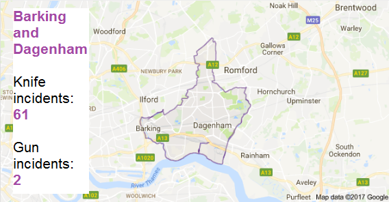

Find out in which London boroughs you are most at risk of knife and gun injury. Compare your home borough with others. Based on the most recent London Ambulance Service data (July 2015 - June 2016). This tool will tell you the number of incidents where a knife or gun injury emergency has been reported to the ambulance service in each borough.
For more information and safety tips, visit the Metropolitan Police website.
|
Select your borough: Compare it: |
 |
Get the data here.